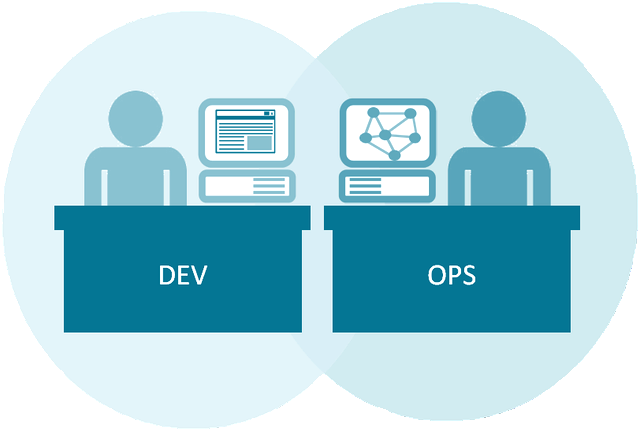

Не нужно выбирать по престижности, советам знакомых и прочим, не относящимся к вашим желаниям критериям. Работа должна приносить удовольствие (в идеале и хороший доход, но для старта — удовольствие тоже важно). Она будет формировать ваше представление о работе, ведь она первая. Так же стоит обратить внимание на направление работы. Она должна расширить ваши профессиональные навыки, а не сузить к какой-нибудь рутине. При правильном выборе направления вы станете более опытным специалистом, но не специалистом с навыками, которые никому не нужны. Рассмотрим проффессии:
 DevOps engineer (Инженер по развитию операций)Это специалист, который работает на стыке этих двух должностей и занимается автоматизацией жизненного цикла приложения (включая проектирование, разработку, тестирование, развертывание, поддержку и мониторинг).
 Manager (Менеджер)
Manager (Менеджер) Это руководитель или управляющий, отвечающий за определённое направление деятельности предприятия. В IT сфере различают несколько видов профессии менеджеров: менеджер по продукту (Product Manager), менеджер по доставке (Delivery Manager) и менеджер проект (Project Manager).
 Technical Writer (Технический писатель)
Technical Writer (Технический писатель)
Это специалист, который составляет техническую документацию (руководства по эксплуатации для пользователей, ТЗ для разработчиков и т.д.) на всевозможные программы и автоматизированные системы.
Системный администраторЭто IT-специалист, который занимается настройкой и обеспечением стабильной работы компьютерного парка.
 Бизнес-аналитик
Бизнес-аналитик
Это специалист, который исследует проблему заказчика, ищет решение и оформляет его концепцию в форме требований, на которые в дальнейшем будут ориентироваться разработчики при создании продукта.
QA Automation engineerЭто специалист по обеспечению качества продукта, который использует программные средства для создания тестов и проверки результатов выполнения.
 Chief technology officer (Главный технический директор)
Chief technology officer (Главный технический директор)Это один из руководителей компании, отвечающий за разработку новых сервисов или продуктов, а также за оптимизацию производительности производства: управление процессами разработки в проектных командах, обучение и повышение квалификации сотрудников, внедрение и поддержка различных процессов внутри компании.
 Software Architect (Архитектор программного обеспечения)
Software Architect (Архитектор программного обеспечения)Это IT-специалист, принимающий решения относительно внутреннего устройства и внешних интерфейсов программного комплекса с учётом проектных требований и имеющихся ресурсов.
 Team Lead (Руководитель группы)
Team Lead (Руководитель группы) Это IT-специалист, который управляет своей командой разработчиков, владеет технической стороной, принимает участие в работе над архитектурой проекта, занимается ревью кода, а также разработкой некоторых особо сложных заданий на проекте.